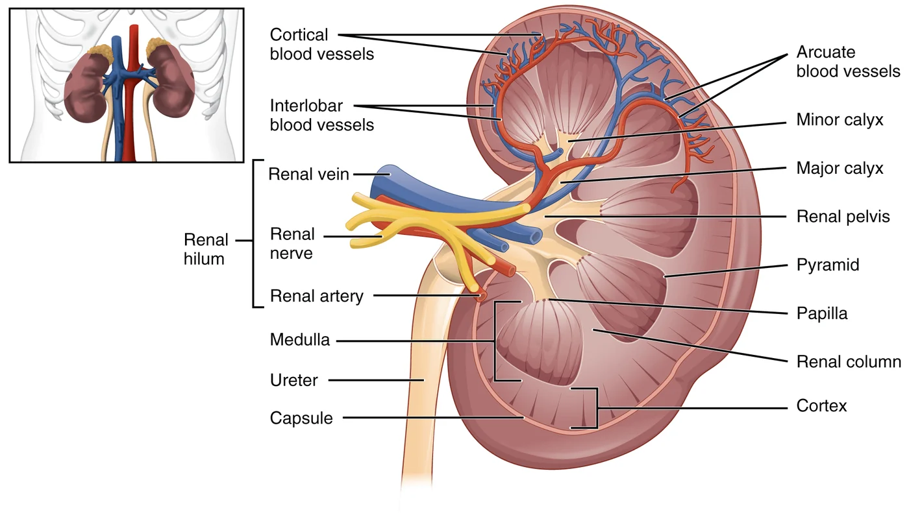

The Urinary System
TEAS objective S.1.10 · Human Anatomy & Physiology
What the TEAS expects: you can trace urine from the kidney to the outside, describe the three steps of urine formation in the nephron, and explain how hormones adjust water and salt balance.
1. The organs
- Kidneys (2): filter blood and make urine. They sit against the back wall of the abdomen (behind the peritoneum, called retroperitoneal), partly protected by the lower ribs.
- Ureters (2): muscular tubes that carry urine from each kidney to the bladder by peristalsis.
- Urinary bladder: stores urine.
- Urethra (1): carries urine from the bladder out of the body. It is much shorter in females, which is one reason urinary tract infections are more common in women.
Path of urine: nephron → collecting duct → minor and major calyces → renal pelvis → ureter → bladder → urethra → outside.
Inside the kidney: an outer cortex, an inner medulla made of cone-shaped pyramids, and the funnel-shaped renal pelvis that collects urine.

Tap or click the figure to open it full size (in a new tab).
Check 1: One structure connects each kidney to the bladder; another drains the bladder to the outside. Which is which? Answer at the bottom of the page.
2. The nephron makes urine
Each kidney has about a million nephrons, its working units. Urine forms in three steps:
- Filtration at the glomerulus (a ball of capillaries inside Bowman's capsule): blood pressure pushes water and small solutes (glucose, salts, urea) out of the blood into the nephron. Blood cells and most proteins are too big and stay in the blood.
- Reabsorption along the tubule, which runs in order: proximal convoluted tubule (where most reabsorption happens) → loop of Henle (helps concentrate urine) → distal convoluted tubule → collecting duct: useful substances move back into the blood. Normally all the glucose and most of the water and sodium are reabsorbed.
- Secretion: the tubule adds extra wastes and excess ions (such as hydrogen and potassium) from the blood into the urine.
What is left flows into a collecting duct, where the final amount of water reabsorbed is adjusted (by ADH), and leaves as urine.
Why it matters clinically: glucose in the urine usually means blood glucose is so high the tubules can't reabsorb it all (a sign of uncontrolled diabetes). Large amounts of protein in the urine suggest the glomerular filter is damaged. Blood in the urine can come from a damaged filter or from anywhere along the urinary tract (for example, a kidney stone or an infection).
3. Hormones adjust the urine
- ADH (antidiuretic hormone), released from the posterior pituitary when you are dehydrated, makes the collecting ducts reabsorb more water. Result: less urine, more concentrated. Alcohol suppresses ADH, which is why it increases urine output.
- Aldosterone, from the adrenal cortex, makes the kidney reabsorb more sodium; water follows the sodium, raising blood volume and blood pressure.
- The kidneys also release renin when blood pressure is low (which starts the chain that leads to aldosterone) and, when blood oxygen is low, erythropoietin (EPO), which tells the red bone marrow to make more red blood cells.
Check 2: A runner is dehydrated after a long race. What happens to ADH and to her urine? Answer at the bottom.
4. Jobs of the kidneys beyond making urine
- Remove nitrogen wastes (urea, creatinine)
- Regulate water and electrolyte balance
- Help regulate blood pressure
- Help keep blood pH stable
- Stimulate red blood cell production (EPO)
- Activate vitamin D
Common traps
- Swapping ureter and urethra. Ureters (two): kidney to bladder. Urethra (one): bladder to outside.
- Thinking filtration is selective. Filtration is based on size; the kidney chooses what to keep during reabsorption.
- Getting ADH backward. More ADH means less urine.
- Forgetting the kidney's endocrine jobs (renin, EPO, vitamin D activation).
Learn it properly
- Bladder, ureters and urethra: OpenStax Anatomy and Physiology 2e, Section 25.2 Gross Anatomy of Urine Transport: OpenStax (opens in a new tab)
- The kidney: Section 25.3 Gross Anatomy of the Kidney: OpenStax (opens in a new tab)
- How urine forms: Section 25.5 Physiology of Urine Formation: OpenStax (opens in a new tab)
Check answers
- Ureter: kidney to bladder. Urethra: bladder to outside.
- ADH rises, so her kidneys reabsorb more water and she makes a small amount of dark, concentrated urine.
ESCC TEAS Prep · Original study material written for Eastern Shore Community College. Figures from OpenStax, Anatomy and Physiology 2e, licensed CC BY 4.0.